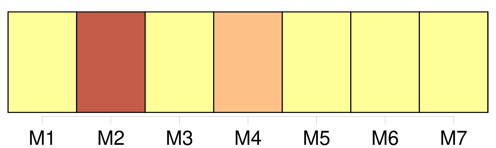

Longueur nb maillons : 509 mentions |
 |
[Le nouveau-né] s’ agite dans [son] berceau. Bien que le vieux ait laissé, pour entrer, ses sabots à la porte, son pas a fait craquer le plancher : [l’ enfant] commence à geindre. La mère se penche hors de son lit, afin de [le] rassurer ; et le grand-père allume la lampe en tâtonnant, pour que [le petit] n’ ait pas peur de la nuit. [4 phrases]
Elle est d’ un blond presque blanc ; ses traits sont tirés ; sa douce figure mouton est marquée de taches de rousseur ; elle a des lèvres pâles et grosses, qui ne parviennent pas à se rejoindre et qui sourient avec timidité ; elle couve [l’ enfant] des yeux – des yeux très bleus, très vagues, où la prunelle est un point tout petit, mais infiniment tendre. [L’ enfant] s’ éveille et [pleure] [Son] regard trouble s’ agite. [1 phrases] Les ténèbres, l’ éclat brutal de la lampe, les hallucinations d’ un cerveau à peine dégagé du chaos, la nuit étouffante et grouillante qui [l’] entoure, l’ ombre sans fond d’ où se détachent, comme des jets aveuglants de lumière, des sensations aiguës, des douleurs, des fantômes : ces figures énormes qui se penchent sur [lui] , ces yeux qui [le] pénètrent, qui s’ enfoncent en [lui] , et qu’ [il] ne comprend pas!! … [Il] n’ a pas la force de crier ; la terreur [le] cloue immobile, les yeux, la bouche ouverts, soufflant du fond de la gorge.
[Sa] grosse tête boursouflée se plisse de grimaces lamentables et grotesques ; la peau de [sa] figure et de [ses] mains est brune, violacée, avec des taches jaunâtres … [1 phrases] qu’ [il] est laid!! [4 phrases] – Tu ne voudrais pas que je te dise qu’ [il] est beau?? [3 phrases] [L’ enfant] sortit de l’ immobilité stupide où [le] plongeaient la flamme de la lampe et le regard du vieux. [Il] se mit à crier. Peut-être sentait [-il] dans les yeux de [sa] mère une caresse qui [l’] engageait à se plaindre.
Elle lui tendit les bras, et dit : [2 phrases]
Mais il vint, prit [le petit] , et grogna : Louisa saisit [l’ enfant] de ses mains fiévreuses et [le] cacha contre son sein.
Elle [le] contempla avec un sourire confus et ravi :
[mon pauvre petit] , dit -elle toute honteuse, que [tu] es laid, que [tu] es laid, comme je [t’] aime! [4 phrases]
On ne [lui] demande qu’ une chose, c’ est de devenir un brave homme. [1 phrases] On [l’] entendait téter avec un halètement goulu. [20 phrases]
La mère et [l’ enfant] tressaillirent.
– Père, je vous en prie, dit Louisa, [il] va pleurer.
[L’ enfant] hésita quelques secondes s’ [il] devait crier ou continuer [son] repas ; mais ne pouvant faire l’ un et l’ autre à la fois, [il] se remit au dernier. [17 phrases]
Elle s’ apaisa à cause [du petit] , et essaya de sourire. [16 phrases]
Il attendit un démenti, cracha sur le feu ; puis, comme ni la mère ni [l’ enfant] n’ élevaient d’ objection, il voulut continuer, – et se tut. [37 phrases]
Il avait rempli son rôle ; et [le petit Jean-Christophe] venait de prendre pied sur cette terre, où [le] poussait [son] destin. [15 phrases] Dans le lit, près de la mère, [l’ enfant] s’ agitait de nouveau. Une souffrance inconnue montait du fond de [son] être. [Il] se raidit contre elle. [Il] tordit [son] corps, [il] serra les poings, [il] fronça les sourcils. [1 phrases] [Il] ne savait pas ce qu’ elle était, ni jusqu’ où elle allait. Elle [lui] paraissait immense, et ne devoir jamais prendre fin. Et [il] se mit à crier lamentablement. [Sa] mère [le] caressa avec de douces mains. [1 phrases] Mais [il] continuait de pleurer ; car [il] la sentait toujours près de [lui] , en [lui] – L’ homme qui souffre peut diminuer son mal, en sachant d’ où il vient ; il [l’] enferme par la pensée en un morceau de [son] corps, qui peut être guéri, arraché au besoin ; il en fixe les contours, il le sépare de [lui] [L’ enfant] n’ a pas cette ressource trompeuse. [Sa] première rencontre avec la douleur est plus tragique et plus vraie. Comme [son] être même, elle [lui] semble sans limites ; [il] la sent installée dans [son] sein, assise dans [son] cœur, maîtresse de [sa] chair. [1 phrases]
La mère [le] presse contre elle, avec de petits mots : [Il] continue toujours [sa] plainte entrecoupée. On dirait que [cette misérable masse inconsciente et informe] a le pressentiment de la vie de peines qui [lui] est réservée.
Et rien ne peut [l’] apaiser … [3 phrases] [L’ enfant] se tut au milieu d’ un sanglot. La merveilleuse musique coulait doucement en [lui] , ainsi qu’ un flot de lait. [1 phrases]
[Sa] douleur s’ évanouit, [son] cœur se mit à rire ; et [il] glissa dans le rêve, avec un soupir d’ abandon. [1 phrases] Louisa rêvait aussi, en les écoutant, à ses misères passées et à ce que serait plus tard [le cher petit enfant endormi auprès d’ elle] [2 phrases] Elle regardait [l’ enfant] ; et la nuit ne l’ empêchait pas de lire dans ses traits vieillots …… [4 phrases]
Les cloches, plus lentement, chantèrent et s’ éteignirent ; et Louisa s’ endormit auprès de [son enfant] [9 phrases]
Jour immense, taciturne, que marque le rythme égal de l’ ombre et de la lumière, et le rythme de la vie de [l’ être engourdi] [qui] rêve au fond de [son] berceau, – [ses] besoins impérieux, douloureux ou joyeux, si réguliers que le jour et la nuit qui les ramènent semblent ramenés par eux. [5 phrases] – Et, parmi ce chaos, la lumière des yeux amis qui [lui] sourient, le flot de joie qui, du corps maternel, du sein gonflé de lait, se répand dans [sa] chair, la force qui est en [lui] et qui s’ amasse énorme, inconsciente, l’ océan bouillonnant qui gronde dans l’ étroite prison de ce petit corps d’ [enfant] Qui saurait lire en [lui] verrait des mondes ensevelis dans l’ ombre, des nébuleuses qui s’ organisent, un univers en formation. [Son] être est sans limites.
[Il] est [tout ce qui est] … [10 phrases]
Si loin qu’ [il] se souvienne, – dans les lointains du temps, à quelque heure de [sa] vie que ce soit, – toujours leurs voix profondes et familières chantent … [8 phrases]
Elle berce [l’ enfant] , ainsi qu’ elle berça pendant des siècles, de la naissance à la mort, les générations qui furent avant [lui] ; elle pénètre [sa] pensée, elle imprègne [ses] rêves, elle [l’] entoure du manteau de ses fluides harmonies, qui [l’] envelopperont encore, quand [il] sera couché dans le petit cimetière qui dort au bord de l’ eau et que baigne le Rhin … [3 phrases] Au son de leurs voix lentes, montent des essaims de rêves, rêves du passé, désirs, espoirs, regrets des êtres disparus, que [l’ enfant] ne connut point, et que pourtant [il] fut, puisqu’ [il] fut en eux, puisqu’ ils revivent en [lui] [5 phrases] Le petit monde familier aux regards de [l’ enfant] , tout ce qu’ [il] aperçoit de [son] lit, chaque matin, en s’ éveillant, tout ce qu’ [il] commence, au prix de tant d’ efforts, à reconnaître et à nommer, afin de s’ en faire [le maître] , – [son] royaume s’ illumine. Voici la table où l’ on mange, le placard où [il] se cache pour jouer, le carrelage en losanges sur lequel [il] se traîne, et le papier du mur, dont les grimaces [lui] content des histoires burlesques ou effrayantes, et l’ horloge qui jacasse des paroles boiteuses, qu’ [il] est seul à comprendre. [1 phrases] [Il] ne les connaît pas toutes. Chaque jour, [il] repart en exploration dans cet univers qui est à [lui] : – tout est à [lui] [5 phrases] Et ces figures, ces gestes, ce mouvement, ce bruit, qui font autour de [lui] un tourbillon perpétuel!! … [Il] est las, [ses] yeux se ferment, [il] s’ endort. Les doux, les profonds sommeils, qui [le] prennent tout d’ un coup, à toute heure, n’ importe où, où [il] est, sur les genoux de [sa] mère, ou bien sous la table, où [il] aime à se cacher!! [2 phrases]
Ces premières journées bourdonnent dans [sa] tête comme un champ de blé, que le vent agite, et sur lequel passent les grandes ombres des nuages … [1 phrases]
[Christophe] commence à retrouver [son] chemin dans le dédale de la journée. [1 phrases] [Ses] parents dorment. [Il] est dans [son] petit lit, couché sur le dos. [Il] regarde les raies lumineuses qui dansent au plafond. [1 phrases] À un moment, [il] rit tout haut, d’ un de ces bons rires d’ [enfant] qui dilatent le cœur de ceux qui l’ entendent. [Sa] mère se penche vers [lui] , et dit : « Qu’ est -ce que [tu] as donc, [petit fou] ?? » Alors [il] rit de plus belle, et peut-être même [il] se force à rire, parce qu’ [il] a un public. Maman prend un air sévère, et met un doigt sur sa bouche, pour qu’ [il] ne réveille pas le père ; mais ses yeux fatigués rient malgré elle. [4 phrases] [Christophe] s’ enfonce dans [son] petit lit et [retient] [son] souffle …… [8 phrases] [L’ enfant] se laisse bercer par ces bruits. [Il] chantonne tout bas, puis moins bas, puis tout haut, puis très haut, jusqu’ à ce que de nouveau la voix exaspérée du père crie : « [Cet âne -là] ne se taira donc jamais!! [Attends] un peu, je vais [te] tirer les oreilles!! » Alors [il] se renfonce dans [ses] draps, et [il] ne sait pas s’ [il] doit rire ou pleurer. [Il] est effrayé et humilié ; et en même temps, l’ idée de l’ âne auquel on [le] compare [le] fait pouffer. Du fond de [son] lit, [il] imite son braiement. Cette fois, [il] est fouetté. [Il] pleure toutes les larmes de [son] corps. Qu’ est -ce qu’ [il] a fait?? [Il] a si envie de rire, de se remuer!! Et il [lui] est défendu de bouger. [2 phrases]
… [Il] a entendu dans la rue un chat, un chien, quelque chose de curieux. [Il] se glisse hors du lit, et [ses] petits pieds nus tapotant gauchement le carreau, [il] veut descendre l’ escalier pour voir ; mais la porte est fermée. Pour l’ ouvrir, [il] monte sur une chaise : tout s’ écroule, [il] se fait très mal, [il] hurle ; et par-dessus le marché, [il] est encore fouetté. [Il] est toujours fouetté!!
… [Il] s’ ennuie. [Il] n’ est pas très à [son] aise. On [lui] défend de remuer, et les gens disent ensemble des mots qu’ [il] ne comprend pas, et puis se taisent ensemble. [1 phrases] [Il] les regarde, intimidé. La vieille Lina, la voisine, assise à côté de [lui] , a pris un air méchant ; à des moments, [il] ne reconnaît même plus [son] grand-père. [Il] a un peu peur. Puis [il] s’ habitue, et [il] cherche à se désennuyer par tous les moyens dont [il] dispose.
[Il] se balance, [il] se tord le cou pour regarder au plafond, [il] fait des grimaces, [il] tire grand-père par son habit, [il] étudie les pailles de [sa] chaise, [il] tâche d’ y faire un trou avec [ses] doigts, [il] écoute les cris d’ oiseaux, [il] bâille à se décrocher la mâchoire. [1 phrases] Un frisson [lui] court le long de l’ échine. [Il] se retourne, le menton appuyé sur le dossier de [sa] chaise, et [il] reste très sage. [Il] ne comprend rien à ce bruit, [il] ne sait pas ce que cela veut dire : cela brille, cela tourbillonne, on ne peut rien distinguer. [4 phrases]
[Il] s’ assoupit. Grand-père est mécontent de [lui]
[Il] se tient mal à la messe. [Il] est à la maison, assis par terre, les pieds dans [ses] mains. [Il] vient de décider que le paillasson était un bateau, le carreau une rivière. [Il] croirait se noyer en sortant du tapis. [Il] est surpris et un peu contrarié que les autres n’ y fassent pas attention, en passant dans la chambre. [Il] arrête [sa] mère par le pan de sa jupe : « Tu vois bien que c’ est l’ eau!! [2 phrases] – [Sa] mère passe, sans même [l’] écouter.
[Il] est vexé, à la façon d’ un auteur dramatique qui voit le public causer pendant sa pièce. L’ instant d’ après, [il] n’ y songe plus. [1 phrases] [Il] est couché dessus, étendu tout de [son] long, le menton sur la pierre, chantonnant des musiques de [sa] composition, et se suçant le pouce gravement, en bavant. [Il] est plongé dans la contemplation d’ une fissure entre les dalles. [3 phrases]
Le tonnerre pourrait tomber, [l’ enfant] ne l’ entendrait pas. Personne ne s’ occupe de [lui] , [il] n’ a besoin de personne. [Il] peut même se passer des bateaux-paillassons, et des cavernes du carreau, avec leur faune fantastique. [Son] corps [lui] suffit. [1 phrases] [Il] passe des heures à regarder [ses] ongles, en riant aux éclats. Ils ont tous des physionomies différentes, ils ressemblent à des gens qu’ [il] connaît. [Il] les fait causer ensemble, et danser, ou se battre. [1 phrases] … [Il] continue l’ inspection de tout ce qui [lui] appartient. [2 phrases]
[Il] s’ absorbe curieusement dans leur vue.
[Il] fut rudement attrapé parfois, quand on [le] surprit ainsi. Certains jours, [il] profite de ce que [sa] mère a le dos tourné, pour sortir de la maison. D’ abord, on court après [lui] , on [le] rattrape. Puis, on s’ habitue à [le] laisser aller seul, pourvu qu’ [il] ne s’ éloigne pas trop. [1 phrases] Tant qu’ [il] est en vue des fenêtres, [il] marche sans s’ arrêter, d’ un petit pas posé, en sautillant sur un pied, de temps à autre. Mais dès qu’ [il] a dépassé le coude du chemin et que les buissons [le] cachent aux regards, [il] change brusquement. [Il] commence par s’ arrêter, le doigt dans la bouche, pour savoir quelle histoire [il] se racontera aujourd’hui ; car [il] en est plein. [1 phrases] [Il] choisit.
D’ habitude, [il] reprend la même, tantôt au point où [il] l’ a laissée la veille, tantôt depuis le commencement, avec des variantes ; mais il suffit d’ un rien, d’ un mot entendu par hasard, pour que [sa] pensée coure sur une piste nouvelle. [5 phrases] [Christophe] en était le général, [il] marchait devant elles, [il] leur donnait l’ exemple, [il] montait à l’ assaut des talus. [1 phrases] [Christophe] montait à cheval, [sautait] des précipices. Il arrivait que la monture glissât ; et [le cavalier] se retrouvait au fond du fossé, regardant d’ un air penaud [ses] mains salies et [ses] genoux écorchés.
Si la baguette était petite, [Christophe] se faisait chef d’ orchestre ; [il] était le chef, et [il] était l’ orchestre ; [il] dirigeait, et [il] chantait ; et ensuite, [il] saluait les buissons, dont le vent agitait les petites têtes vertes. [Il] était aussi magicien. [Il] marchait à grands pas dans les champs, en regardant le ciel et en agitant les bras. [Il] commandait aux nuages : – « [Je] veux que vous alliez à droite. [1 phrases] Alors [il] les injuriait, et [réitérait] l’ ordre. [Il] les guettait du coin de l’ œil, avec un battement de cœur, observant s’ il n’ y en aurait pas au moins un petit qui [lui] obéirait ; mais ils continuaient de courir tranquillement vers la gauche. Alors [il] tapait du pied, [il] les menaçait de [son] bâton, et [il] leur ordonnait avec colère de s’ en aller à gauche : et en effet, cette fois, ils obéissaient parfaitement. [Il] était heureux et fier de [son] pouvoir. [Il] touchait les fleurs, en leur enjoignant de se changer en carrosses dorés, comme on [lui] avait dit qu’ elles faisaient dans les contes ; et bien que cela n’ arrivât jamais, [il] était persuadé que cela ne manquerait pas d’ arriver, avec un peu de patience. [Il] cherchait un grillon pour en faire un cheval : [il] lui mettait doucement [sa] baguette sur le dos, et [disait] une formule. L’ insecte se sauvait : [il] lui barrait le chemin. Après quelques instants, il était couché à plat ventre, près de [lui] , et [il] le regardait.
[Il] avait oublié [son] rôle de magicien, et s’ [amusait] à retourner sur le dos la pauvre bête, en riant de ses contorsions. [Il] inventait d’ attacher une vieille ficelle à [son] bâton magique, et [il] la jetait gravement dans le fleuve, attendant que le poisson vînt mordre. [Il] savait bien que les poissons n’ ont pas coutume de manger une ficelle sans appât ni hameçon ; mais [il] pensait que pour une fois, et pour [lui] , ils pourraient faire une exception ; et [il] en vint, dans [son] inépuisable confiance, jusqu’ à pêcher dans la rue avec un fouet, à travers la fente d’ une plaque d’ égout.
[Il] retirait [son] fouet de temps en temps, très ému, s’ imaginant que la corde était plus lourde cette fois, et qu’ [il] allait ramener un trésor, ainsi que dans une histoire contée par grand-père … Au milieu de ces jeux, [il] avait des instants de rêvasserie étrange et de complet oubli. Tout ce qui [l’] entourait s’ effaçait, [il] ne savait plus ce qu’ [il] faisait, [il] ne se souvenait même plus de [lui -même] Cela [le] prenait à l’ improviste. [1 phrases] Il semblait qu’ [il] ne pensât plus à rien. Quand [il] revenait à [lui] , [il] avait un étourdissement, en se retrouvant à la même place, dans l’ obscur escalier.
C’ était comme s’ [il] avait vécu toute une vie, – l’ espace de quelques marches. Grand-père [le] prenait souvent avec lui, dans ses promenades du soir. [Le petit] trottinait à ses côtés, en lui donnant la main. [4 phrases] [Christophe] savait bien ce que cela voulait dire. Le vieux brûlait d’ envie de raconter une histoire ; mais il voulait que [l’ enfant] la lui demandât. [Christophe] n’ y manquait pas. [1 phrases] Le vieux avait une immense affection pour [son petit-fils] ; et ce lui était une joie de trouver en [lui] [un public complaisant] [8 phrases] Il disait des mots historiques, d’ un ton si solennel qu’ il devenait impossible de les comprendre ; et il croyait d’ un grand art de faire languir [l’ auditoire] aux moments palpitants : il s’ arrêtait, feignait de s’ étrangler, se mouchait bruyamment ; et son cœur jubilait, quand [le petit] demandait, d’ une voix étranglée d’ impatience : « Et puis, grand-père??
» – Mais pour l’ instant, [il] est tout livré au pouvoir du conteur. [Son] sang battait plus fort aux passages dramatiques. [Il] ne savait pas trop de qui il s’ agissait, ni où, ni quand ces exploits se passaient, si grand-père connaissait Arminius, et si Régulus n’ était pas, – Dieu sait pourquoi?? – quelqu’un qu’ [il] avait vu à l’ église, dimanche passé.
Mais [son] cœur et celui du vieux se dilataient d’ orgueil au récit des actes héroïques, comme si c’ étaient eux -mêmes qui les avaient accomplis : car le vieux et [l’ enfant] étaient aussi enfants l’ un que [l’ autre] [Christophe] était moins heureux, quand grand-père plaçait au moment pathétique un de ses discours rentrés qui [lui] tenaient à cœur. [1 phrases] Grand-père ne redoutait pas la critique de [son jeune public] , et il s’ abandonnait à son emphase ordinaire ; il ne craignait pas de répéter les mêmes termes, de ne pas finir les phrases, ou même, quand il était perdu au milieu de son discours, de dire tout ce qui lui passait par la tête, pour boucher les trous de sa pensée ; et il ponctuait ses mots, afin de leur donner plus de force, par des gestes à contresens.
[Le petit] écoutait avec un profond respect ; et [il] pensait que grand-père était très éloquent, mais un peu ennuyeux. Ils aimaient l’ un et [l’ autre] à revenir souvent sur la légende fabuleuse de ce conquérant corse qui avait pris l’ Europe. [6 phrases] – Mais [Christophe] le rappelait impatiemment aux exploits du héros ; et [il] était dans l’ extase de ces chevauchées merveilleuses par le monde. [Il] le voyait suivi de peuples innombrables, qui poussaient des cris d’ amour, et qu’ un geste de lui lançait en tourbillons sur les ennemis toujours en fuite. [6 phrases] Et si ce langage avait pour objet de rétablir dans l’ esprit de [l’ enfant] le sens de la justice, il faut avouer qu’ il manquait son but ; car la logique enfantine risquait fort de conclure : « Si un grand homme comme celui -là n’ avait pas de moralité, c’ est donc que la moralité n’ est pas grand’chose, et que la première affaire, c’ est d’ être un grand homme. [3 phrases] [L’ enfant] en rougissait, sans comprendre pourquoi. [2 phrases] Alors [Christophe] s’ asseyait près de lui, sur un talus de pierres branlantes, sur une borne, ou sur quelque haut siège bizarre et incommode ; et [il] balançait [ses] petites jambes, en chantonnant et en rêvassant. Ou bien, [il] se couchait sur le dos, et [regardait] courir les nuages : ils avaient l’ air de bœufs, de géants, de chapeaux, de vieilles dames, d’ immenses paysages. [Il] causait tout bas avec eux ; [il] s’ intéressait au petit nuage, que le gros allait dévorer ; [il] avait peur de ceux qui étaient très noirs, presque bleus, ou qui couraient très vite. Il [lui] semblait qu’ ils tenaient une place énorme dans la vie ; et [il] était surpris que [son] grand-père et [sa] mère n’ y fissent pas attention. [2 phrases] [L’ enfant] finissait par avoir le vertige de trop regarder, et [il] gigotait des pieds et des mains, comme s’ [il] allait tomber dans le ciel. [Ses] paupières clignotaient, le sommeil [le] gagnait …… [4 phrases] Les yeux de [Christophe] se ferment. Près de [lui] , une fourmi chemine sur une branche morte en travers d’ un sillon. [Il] perd conscience …… [1 phrases] [Il] se réveille. [2 phrases] [Christophe] le regardait avec inquiétude et [craignait] de voir sa tête se changer en une forme fantastique. [Il] chantait plus fort pour le réveiller, ou [il] se laissait dégringoler à grand fracas de [son] talus de pierres. Un jour, [il] inventa de lui jeter à la figure quelques aiguilles de pin, et de lui dire qu’ elles étaient tombées de l’ arbre. Le vieux le crut : cela fit bien rire [Christophe] Mais [il] eut la mauvaise idée de recommencer ; et, juste au moment où [il] levait la main, [il] vit les yeux de grand-père qui [le] regardaient. [1 phrases] Plus le chemin était mauvais, plus [Christophe] le trouvait beau. La place de chaque pierre avait un sens pour [lui] ; [il] les connaissait toutes. Le relief d’ une ornière [lui] semblait un accident géographique, à peu près du même ordre que le massif du Taunus. [Il] portait dans [sa] tête la carte des creux et des bosses de tout le pays qui s’ étendait à deux kilomètres autour de la maison.
Aussi, quand [il] changeait quelque chose à l’ ordre établi dans les sillons, ne se croyait -il pas beaucoup moins important qu’ un ingénieur avec une équipe d’ ouvriers ; et lorsque avec [son] talon [il] avait écrasé la crête sèche d’ une motte de terre et comblé la vallée qui se creusait au bas, [il] pensait n’ avoir point perdu [sa] journée. [4 phrases] Le cheval filait vite, et [Christophe] riait de joie, à moins qu’ on ne vînt à croiser d’ autres promeneurs : alors, [il] prenait un air grave et dégagé, comme quelqu’un qui est habitué à aller en voiture ; mais [son] cœur était inondé d’ orgueil. Grand-père et l’ homme causaient, sans s’ occuper de [lui] Blotti entre leurs genoux, écrasé par leurs cuisses, à peine assis, et souvent pas assis du tout, [il] était parfaitement heureux ; [il] causait tout haut, sans s’ inquiéter des réponses. [Il] regardait remuer les oreilles du cheval. [1 phrases] Elles allaient de tous côtés, à droite, à gauche, elles pointaient en avant, elles retombaient de côté, elles se retournaient en arrière, d’ une façon si burlesque qu’ [il] riait aux éclats. [Il] pinçait [son] grand-père pour les lui faire remarquer. [1 phrases] Il repoussait [Christophe] , en [lui] disant de le laisser tranquille. [Christophe] réfléchissait : [il] pensait que quand on est grand, on ne s’ étonne plus de rien, on est fort, on connaît tout.
Et [il] tâchait d’ être grand, [lui] aussi, de cacher [sa] curiosité, de paraître indifférent. [Il] se taisait. Le roulement de la voiture [l’] assoupissait. [3 phrases] [Christophe] les trouvait superbes. Il y en eut une surtout qui [lui] parut si belle qu’ [il] voulut attirer l’ attention de grand-père. [Il] la chanta plus fort. [1 phrases] [Il] la recommença, sur un ton au-dessus, – puis encore une fois, à tue-tête, – tant que le vieux Jean-Michel [lui] dit avec irritation : « Mais à la fin, [tais] -toi!! [tu] es assommant avec [ton] bruit de trompette!! » – Cela [lui] coupa la respiration ; [il] rougit jusqu’ au nez, et se [tut] , mortifié. [Il] écrasait de [son] mépris les deux lourds imbéciles, qui ne comprenaient pas ce que [son] chant avait de sublime, un chant qui ouvrait le ciel!!
[Il] les trouva très laids, avec leur barbe de huit jours ; et ils sentaient mauvais. [Il] se consola en regardant l’ ombre du cheval. [4 phrases] [Christophe] n’ eût pas aimé se rencontrer seul avec elle. [Il] n’ aurait pas couru après, comme [il] faisait après l’ ombre de grand-père, pour lui marcher sur la tête et piétiner dessus. [2 phrases] Elle avait l’ air de fantômes tristes et grotesques, qui disaient : « N’ [allez] pas plus loin » ; et les essieux grinçants et les sabots du cheval répétaient : « Pas plus loin!! [2 phrases] [L’ enfant] cessait de rêver, et les [regardait] , inquiet. Il [lui] semblait qu’ ils étaient fâchés l’ un contre l’ autre, et [il] craignait qu’ ils n’ en vinssent aux coups. [2 phrases] Mais [Christophe] , [qui] ne comprenait pas leur conversation, entendait seulement leurs éclats de voix, [il] voyait leurs traits crispés, et [il] pensait avec angoisse : « Comme il a l’ air méchant!! [3 phrases] Il [m’] a craché au nez, dans sa fureur. [6 phrases] Le paysan lui tendait [le petit garçon] [13 phrases]
… Les voyages qu’ on fait plus tard, les grandes villes, les mers mouvantes, les paysages de rêves, les figures aimées, ne se gravent pas dans l’ âme avec la justesse infaillible de ces promenades d’ enfance, ou du simple coin de jardin tous les jours entrevu par la fenêtre, à travers la buée de vapeur que fait sur la vitre la petite bouche collée de [l’ enfant désœuvré] … [9 phrases] La digestion [le] plonge en une extase, où les figures, les ombres, l’ abat-jour de la lampe, les langues de flammes qui dansent avec une pluie d’ étoiles dans la cheminée noire, tout prend une apparence réjouissante et magique.
[Christophe] appuie [sa] joue sur [son] assiette pour mieux jouir de tout ce bonheur … [Il] est dans [son] lit tiède. Comment y est [-il] venu?? La bonne fatigue [l’] écrase. Le bourdonnement des voix dans la chambre et des images de la journée se mêle dans [son] cerveau. Le père prend [son] violon ; les sons aigus et doux se plaignent dans la nuit. Mais le suprême bonheur est lorsque maman vient, qu’ elle prend la main de [Christophe] assoupi, et que, penchée sur [lui] , à [sa] demande, elle chante à mi-voix une vieille chanson, dont les mots ne veulent rien dire. Le père trouve cette musique stupide ; mais [Christophe] ne s’ en lasse pas. [Il] retient [son] souffle ; [il] a envie de rire et de pleurer ; [son] cœur est ivre. [Il] ne sait pas où [il] est, [il] déborde de tendresse ; [il] passe [ses] petits bras autour du cou de [sa] mère et l’ [embrasse] de toutes [ses] forces.
Elle [lui] dit en riant : [Il] la serre plus fort. Comme [il] l’ aime, comme [il] aime tout!! [2 phrases] [Il] s’ endort. [3 phrases] … Oui, [il] le sera!! … [il] l’ est …… [2 phrases]
… [Quel trop-plein d’ énergie] !! [Son] corps et [son] esprit sont toujours en mouvement, emportés dans une ronde qui tourne à perdre haleine. Comme une petite salamandre, [il] danse jour et nuit dans la flamme. [2 phrases] La vie ne [le] tient pas encore ; à tout instant, [il] s’ en échappe : [il] nage dans l’ infini. Qu’ [il] est heureux!! qu’ [il] est fait pour être heureux!! Rien en [lui] qui ne croie au bonheur, qui n’ y tende de toutes [ses] petites forces passionnées!!
… |

|
Il est possible de télécharger la ressource sur la page Ortolang |
Si vous avez des questions ou vous voyez des erreurs, merci d'envoyer un mail à silvia.federzoni89@gmail.com |